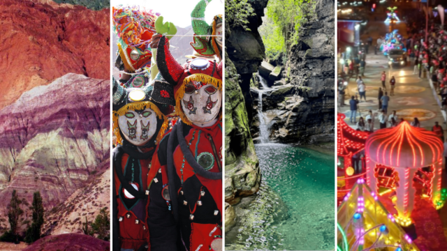

Cultura y tradiciones
La provincia norteña ofrece muchas alternativas culturales, además de un paisaje de ensueño. Tiene una cultura vigente que resulta de la mezcla de la conquista hispánica con un calendario de Semana Santa, del Carnaval, de la Fiesta de la Pachamama, fiesta de los estudiantes, que son algunas de las innumerables alternativas culturales que ofrece la provincia.
La cultura de Jujuy, es diversa, con manifestaciones
que incluyen tradiciones, fiestas, música, canto, danza, arte,
gastronomía y costumbre.
La música y la danza son elementos fundamentales de la cultura jujeña. Ritmos como el
carnavalito, la cueca y el bailecito se acompañan de instrumentos típicos
como la quena, el charango y el bombo legüero. Durante las festividades,
es común ver a la gente vestida con trajes coloridos, celebrando al ritmo
de la música tradicional.
La gastronomía de Jujuy combina ingredientes autóctonos con técnicas
ancestrales. Platos como las humitas, los tamales y el locro forman parte
de la identidad jujeña. Además, la carne de llama y el maíz son productos
fundamentales en la dieta local, reflejando la herencia de los pueblos
originarios.
Las artesanías son una expresión clave de la identidad cultural jujeña.
Desde tejidos en telar realizados con lana de llama y oveja, hasta
cerámicas y tallados en madera o piedra, cada pieza transmite saberes
ancestrales. Muchos artesanos aprenden el oficio desde niños, dentro
del núcleo familiar, y elaboran productos únicos que representan símbolos
andinos.
La cultura jujeña no solo se vive en las grandes celebraciones, sino
también en el día a día de sus pueblos. En mercados, ferias artesanales
y festividades barriales, se observa el respeto por las costumbres
heredadas de generación en generación. Las comunidades mantienen vivas
sus creencias, prácticas espirituales y modos de vida que reflejan
una fuerte conexión con la tierra.